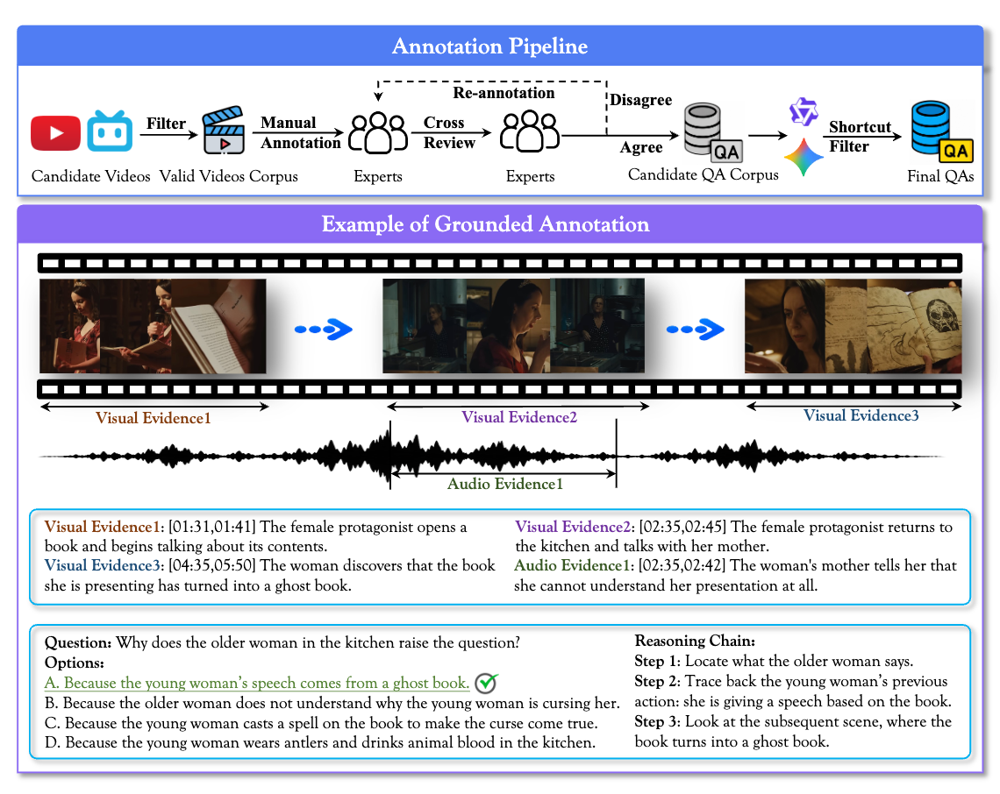

Evidence, not just answers
Every prediction pairs an answer with timestamped audio and visual evidence. Measure correctness, evidence coverage, and localization together.
An Evidence-Grounded Benchmark for Audio-Visual Reasoning
Getting the answer right is only the beginning.
Can your model find the audio and visual evidence to back it up?

A closer look at whether models really connect what they see and hear.
Every prediction pairs an answer with timestamped audio and visual evidence. Measure correctness, evidence coverage, and localization together.
15 capabilities span retrieval and grounding, basic understanding, and complex reasoning, requiring complementary information from both modalities.
Expert annotation and human cross-validation meet text-only, audio-only, and visual-only screening to reduce shortcut-based success.
Gemini3.7-Flash: 79.4% accuracy. Only 35.1% bottleneck grounded score. Even the strongest evaluated model leaves a substantial gap between answering correctly and grounding its answer.
How well do today's omni-modal models reason with evidence?
| Rank | Model | Availability | |||
|---|---|---|---|---|---|
| Gemini3.7-Flash | Proprietary | 79.4 | 70.8 | 35.1 | |
| Gemini3.8-Flash | Proprietary | 78.0 | 68.2 | 33.6 | |
| Gemini3.6-Flash | Proprietary | 74.4 | 65.8 | 31.7 | |
| 04 | Gemini3.1-Pro-Preview | Proprietary | 72.3 | 63.7 | 29.8 |
| 05 | Gemini2.5-Pro | Proprietary | 71.0 | 61.6 | 28.9 |
| 06 | Doubao-Seed-2.1-Lite | Proprietary | 70.9 | 64.3 | 27.2 |
| 07 | Gemini3.5-Flash | Proprietary | 68.5 | 58.6 | 25.6 |
| 08 | Gemini4-Argon | Proprietary | 61.4 | 43.0 | 19.1 |
| 09 | Qwen3.8-Omni-Flash | Proprietary | 58.2 | 45.7 | 14.4 |
| 10 | MiMo-V2.5-310B-A15B | Open-weight | 56.8 | 48.4 | 20.5 |
| 11 | Doubao-Seed-2.0-Lite | Proprietary | 55.4 | 35.6 | 10.4 |
| 12 | MiMo-V2.6-Flash-310B-A15B | Open-weight | 53.6 | 45.3 | 19.3 |
| 13 | MiMo-V2.6-Pro-1T-A42B | Open-weight | 51.8 | 40.7 | 18.1 |
| 14 | Qwen3.5-Omni-Plus | Proprietary | 49.0 | 36.0 | 13.5 |
| 15 | Gemini3.5-Flash-Lite | Proprietary | 48.3 | 39.1 | 16.3 |
| 16 | Gemini2.5-Flash | Proprietary | 48.1 | 40.4 | 16.9 |
| 17 | Gemini3.1-Flash-Lite-Preview | Proprietary | 47.8 | 39.4 | 15.6 |
| 18 | Gemini3.1-Flash-Lite | Proprietary | 45.6 | 38.3 | 15.2 |
| 19 | Gemini2.5-Flash-Lite | Proprietary | 39.7 | 31.8 | 13.1 |
| 20 | Qwen3.5-Omni-Flash | Proprietary | 37.7 | 30.4 | 10.0 |
| 21 | Qwen3-Omni-Instruct-30B-A3B | Open-weight | 25.2 | 4.0 | 0.4 |
| 22 | Qwen3-Omni-Thinking-30B-A3B | Open-weight | 24.8 | 8.3 | 2.8 |
| 23 | Nemotron3-Nano-Omni-30B-A3B | Open-weight | 24.2 | 12.6 | 4.0 |
| 24 | Qwen2.5-Omni-7B | Open-weight | 16.4 | 0.8 | 0.3 |
Acc. = answer accuracy · C.G. = Coverage Grounded Score · B.G. = Bottleneck Grounded Score. All scores are percentages (↑ higher is better). Both grounded scores include answer correctness.
Source: paper's main results, 7 open-weight and 17 proprietary models. Human experts may pause and replay videos; viewing conditions differ from model inference.
One example from each reasoning level, with the original video, QA, and annotated evidence.
Click an evidence timestamp to play that annotated segment. Use the controls below to return to the full video.
Full video · press play to watch
F. A man is lifting and showing several strings of sausages.
A man takes several strings of white sausages out of the water and holds them up.
The narration says, "With the Weisswurst to be one of the city's best."
The first entry from each level in the released dataset: QA #0002 (Level 1), QA #0001 (Level 2), and QA #0011 (Level 3). Click evidence timestamps to play annotated segments; original video links are also provided.
Download the data, explore the annotations, and evaluate your model with grounded metrics.
If EvaOmni supports your research,
please consider citing our work.
@article{hu2026evaomni,
title={EvaOmni: An Evidence-Grounded Benchmark for Audio-Visual Reasoning},
author={Hu, Xiaoxing and Yao, Wenxi and Shi, Chaoyuan and Ye, Ziqi and Guo, Xiaorong and Li, Peixuan and Sun, Zhuoran and Gong, Ziyang and Zhang, Peiyuan and Liu, Mingxin and Ma, Shuran and Liu, Hongbo and Yu, Xiaomin and Tian, Yu and Wang, Wentao and Yang, Zhenjie and Hu, Jian and Shen, Yunhang and Cao, Haoyu and Yang, Xue},
journal={arXiv preprint arXiv:2610.28444},
year={2026}
}